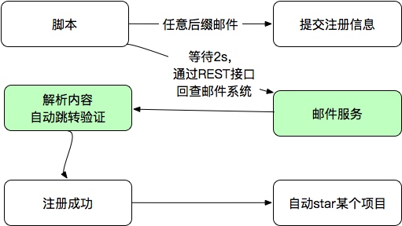

邮箱验证类注册账户
前言
以太坊Kovan测试网的水龙头每天每个账户只能领取0**.**001 ETH（少得可怜！）。由于gitter只能用twitter、gitlab以及GitHub账户进行登录，为了学（hao）知（yang）识（mao），于是想着怎么去大量注册一堆GitHub或者gitlab账户，然后每天通过这些账户去请求Kovan测试币。
大致思路是：获取大量账户=》利用这些账户去登录gitter=》然后利用api发送信息到gitter频道获取测试币。
实现
获取大量邮箱
模拟邮件服务器，批量注册利器 这个仓库用python实现一个邮箱服务器，最开始的想法就是利用这个方式来获取。
实现的批量注册逻辑大概如下：

于是跑到了狗爹上去看了看，鬼使神差的就买了一年的虚拟主机（花了360大洋）。
购买之后，遇见了第一个问题，点击虚拟主机的管理选项时出现如下情况：
然后换了QQ浏览器，又出现了另一个问题，登录cPanel的时候提示存在非法内容：
最后用火狐浏览器终于登上了（狗爹这波真的是）：
满心欢喜的XFTP、XSHELL链接后，发现我根本没有root权限，想安装个python都不能在/usr/local里面创建目录，甚至su sudo命令都没了（狗爹你赢了，系统还是Red Hat 4.4.7-23）：
于是乎，邮箱服务器的计划就这样破灭了。为了不让这360白花了，我还是去看了看服务器的控制台。
发现一个这个东西：
这个可以将邮件转发到指定的地址，这不也是先之前那个仓库的效果（真是柳暗花明又一村啊！）：

注册Github账户
由于注册只需要接受邮件即可，那么我们可以输入任意的前缀然后转发到指定邮箱就可以获取验证码，然后理论上就有了无限的邮箱可以用来注册使用了~
于是用GitHub试了试，成功收到了验证码并完成了注册：

自动化注册脚本暂时还没有实现，看后面能不能找到实现方法，现在这样还是有点麻烦。
使用GitHub账户自动登录gitter
 wechat
wechat alipay
alipay